Overview
SIMION 8.1's "surface enhancement" feature has the capability to improve the accuracy of field (and trajectory) calculations by more than an order of magnitude in the case when electrode surfaces do not perfectly align to grid points. For background and details on this capability, see Doc(Surface Enhancement). The examples in this folder illustrate the accuracy improvements possible with surface enhancement.
The accuracy improvements require that surface position information be embedded in the PA object. This information is used to improve that accuracy of the Refine. The surface information, if it exists, is visible as red lines in the Modify screen:
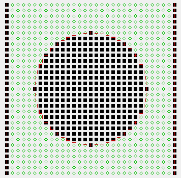
Figure: Example of a PA with surface enhancement information. Surface position markers are shown as red lines in SIMION Modify.
Caution: not all features of SIMION support surface enhancement information yet. Currently (in 8.1.1.10), GEM files can be used to create this surface information, but STL and Modify drawing do not yet support this. See Doc(Surface Enhancement) for more details.
A number of sub-examples illustrating surface enhancement are described below.
Tilted Plates Example (tilted_plates.iob)
The "tilted_plates.iob" example simply contains two parallel plates tilted at a small angle (2.86°):
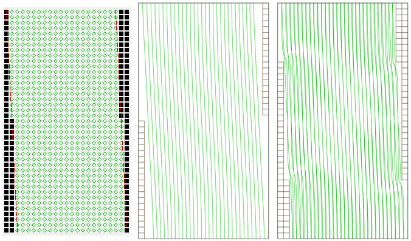
Figure: (left) PA in SIMION Modify screen showing surface enhancement info as red lines, (middle) potential contour lines, (right) same as middle figure but also superimposes potential contours lines of a PA without surface enhancement (for comparison)
The tilt in the horizontal direction is represented by only two grid units, and there would normally be some significant errors in potentials near the surface jags, as the right figure above shows. With the enhanced surface information (left figure above), the surface is accurately represented to a small fraction of a grid unit, so the potential contour lines remain very smooth even near what would otherwise be surface jags (middle picture above).
There are no particle trajectories used in this example. To use this example, just load "tilted_plates.iob". You should refine if prompted to, and the refining is done in the usual way. The potentials are then visualized on the screen.
A 3D version of the GEM file is also provided (tilted_plates3d.gem) shown below:
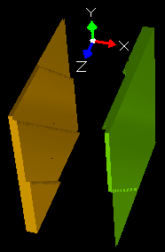
Figure: PA from tilted_plates3d.gem (tilted plates in 3D symmetry), viewed in Modify 3D view.
Spherical Capacitor (Idealized HDA) Example (sc.iob and sc3d.iob)
As discussed in Doc(HDA), the electric field of an idealized hemispherical deflection analyzer (HDA) can be represented by the electric field of a spherical capacitor (SC), which consists of two concentric spheres of differing potential. Charged particles of with only a certain energy range will pass through it. Both the electric field and the trajectories of particles in the SC have known analytical expressions, so calculations can be compared against theory.
"sc.iob" and "sc3d.iob" are examples of a spherical capacitor with electrons flying through it. "sc.iob" uses 2D cylindrical symmetry, whereas "sc3d.iob" uses 3D symmetry (for comparison). The below figure was generated by flying the "sc.iob" example and disabling display of potential contours (by unchecking "Drag" on the PE/Contours tab):
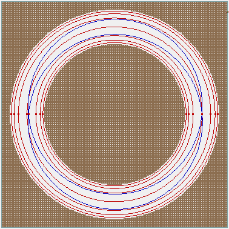
Figure: Spherical capacitor with electron trajectories flying through it.
This example consists of spherical surfaces of radius 80 mm and 120 mm, with potentials of 500 V and -333.3333 V respectively. Electrons are traced through the gap at radii r0 of 82, 85, 90, 100, 110, 115, and 118 mm, with energies of 1000 * (100/r0) eV, which in theory (ignoring relativistic effects) should trace circular paths of constant radii..
To allow more easy comparison against non-relativistic theory, it's recommended to disable relativistic effects (by checking the "more > Omit relativistic effects" checkbox on Particles tab. (Alternately, particles less prone to relativistic effects may be flown.) If there are no relativistic effects, no change in radii are expected. If we leave relativistic effects on, there is an approximately 0.2 mm shift in particle positions.
The workbench in this example actually contains two PA instances: sc.pa (created from sc.gem) and sc_trad.pa (created from sc_trad.gem). The only difference is that the former PA contains surface enhancement, whereas the latter does not. Both are placed on the same workbench to permit comparison. Since these PA instances overlap, particles only see the potentials from the highest priority PA instance (on the PAs tab), which you can change via the L-/L+ buttons in order to switch between the two and thereby compare trajectories with and without surface enhancement. Our goal after all is to determine what effect surface enhancement (or lack thereof) has on fields and trajectories.
The following GEM file was used to generate the potential array (sc.pa) in this example:
; sc.gem
pa_define(130,130,1,cylindrical,xy, surface=fractional)
; outer electrode, R2
e(-333.3333) { fill { notin { circle(0,0,120) } } }
; inner electrode, R1
e( 500.0000) { fill { within { circle(0,0,80) } } }
Notice the surface=fractional.
That tells SIMION to record surface enhancement information in the GEM file.
Also notice that when using surface=fractional, it is not
necessary to bother with 0.5 gu or 1 gu adjustments to electrode surfaces.
For example, this PA might traditionally be written using a
notin_inside { circle(0,0,120) } or notin { circle(0,0,119) }
to improve accuracy of surface locations.
The "sc_trad.gem" generates a PA without surface enhancement, for comparison.
An alternate way to generate sc.pa (rather than using GEM files)
is via a batch mode Lua program using the
Lua PAs API,
as done in sc_build.lua shown below.
This program constructs of PA object of the desired size, fills its points using a Lua function
that defines the surfaces analytically (making sure to pass it the
surface='fractional' option to enable surface enhancement), refines, and saves it.
sc_build.lua can be invoked via the "Run Lua Program" button on the SIMION main screen.
simion.pas:close()
local pa = simion.pas:open()
pa:size(130,130,1)
pa.symmetry = '2dcylindrical[x]'
pa:fill { function(x,y,z)
local r = math.sqrt(x^2+y^2+z^2)
if r <= 80 then
return 500.0000, true
elseif r >= 120 then
return -333.3333, true
else
return 0, false
end
end, surface='fractional'}
pa:refine { convergence=1e-5 }
pa:save'sc.pa'
Below is what the surface enhanced PA looks like in SIMION Modify upon zooming into one region. Notice the red markers showing the exact surface locations.
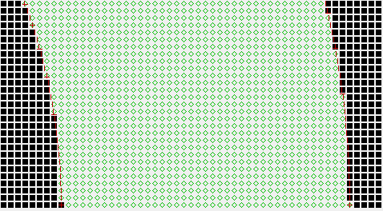
Figure: Spherical capacitor PA with enhanced surface information (red lines), shown in SIMION Modify, zoomed in near gap region.
Below is a plot of potential contours of the two PA's:
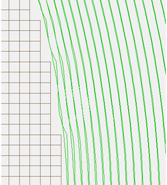
Figure: Overlapped potential contour lines of PA's with and without surface enhancement. Zoomed in near inner sphere surface.
The contour lines of the PA without surface enhancement wiggle near surface jags.
Below is a plot of errors in calculated potential from SIMION Refine for PAs with and without surface enhancement, in 2D and 3D versions. Note: PA's were both refined to a 1E-7 V convergence level.
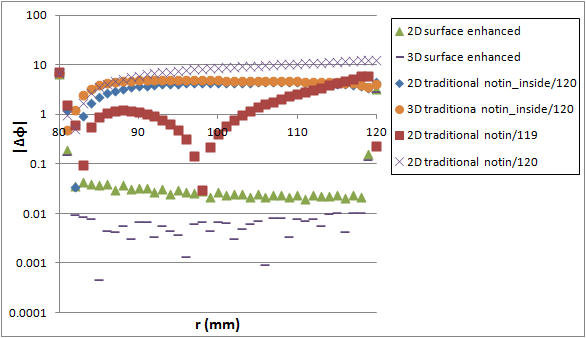
Figure: Error in SIMION calculated PA potentials along radial line (X=Y), compared to theory. Both a PA with surface enhancement information and a (traditional) PA without it (built in three different ways) are compared.
Errors in the surface enhanced PA are more than an order (or perhaps two orders) of magnitude less than the traditional PA, except within one grid unit away from the surfaces, where they are about the same. The errors one grid unit from the surfaces could be improved likewise, and it only requires changes in the View screen (not Refine) in terms of how potentials are interpolated, but this is not implemented yet. The above data was derived from the Log window output obtained by pressing Fly'm. The attached user program (sc.lua) contains some code to take these measurements.
Here is a more complete view of the potential errors, over a section of 2D surface rather than just a line:
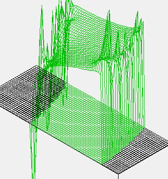
Figure: Potential errors displayed as SIMION PE Surface. (top surface) PA without surface enhancement info, (bottom surface) PA with surface enhancement info
The above figure was generated by executing in the SIMION command bar the
command make_difference(), which subtracts theoretical potentials from
actual potentials in the PA's.
The results are PA's containing error amounts.
These can be visualized using SIMION's PE view.
(Warning: the make_difference() will alter in the PA's in a way that makes them
unusable for particle flying.
After doing this, you should Remove All PAs from RAM and reload the IOB.)
The following demonstrates the accuracy of the particle trajectories:
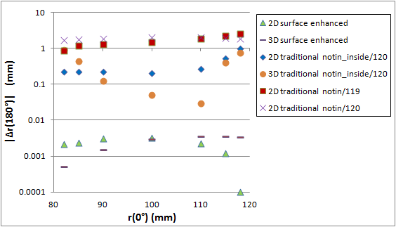
Figure: Radial deflection of electrons after traveling 180 degrees, as a function of starting radius. Use of surfaced enhanced and traditional PA's are compared. Relativistic effects are disabled to permit easier comparison to theory.
Observe the at least two orders of magnitude improvement in accuracy with surface enhancement enabled.
Let's examine other sources of error. There are two sections of commented out code in sc.lua. The first can replace the SIMION calculated E-field with a theoretical E-field, thereby eliminating errors from the E-field calculation so that errors in the trajectory calculation can be examined in isolation. The errors in the trajectory calculation are seen to be very small, particularly if a trajectory quality (T.Qual) factor of +500 is used (note: in Data Recording, increase the precision setting to see more digits in the output). The other section of commented out code in sc.lua can fill PA instance #2 with theoretical potentials. This is useful for examining errors due to interpolation of potentials between PA grid points. It is seen that a PA with theoretical potentials gives fairly similar error levels in trajectories to the SIMION calculated field with surface enhancement, thereby showing that after surface enhancement the main source of error is due to interpolation. There has been work to improve the interpolation accuracy, which is planned for a future update to SIMION, but this is a different topic and secondary to the major improvements possible with surface enhancement.
RF Quadrupole Example (quad.iob)
"quad.iob" is an RF quadrupole example, based on Examples(quad) but using surface enhancement:
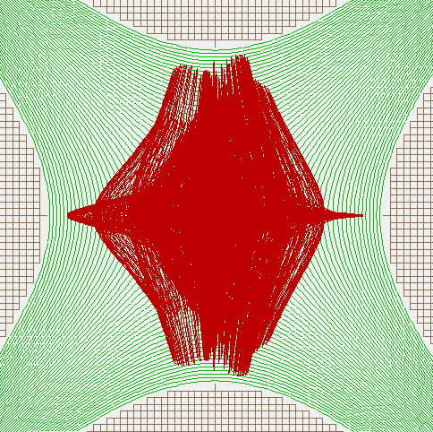
Figure: Particle trajectories and potential contour lines for quad.iob, running at 99.8 % tune with only 25 grid units along radius.
Note that if surface enhancement is used, particles are stable up to 99.8% tune, but without surface enhancement, particles are only stable up to about 96% tune. This demonstrates how surface enhancement allows simulations with much higher resolution.
Batch Mode Example, Parallel Plates (tilted_plates_batch.lua)
This example is somewhat similar to "tilted_plates.iob" but illustrates using batch mode for surface enhancement. The example can be run by selecting "tilted_plates_batch.lua" from the Run Lua Program button on the SIMION main screen. The batch program will generate two fast adjustable potential arrays representing tilted parallel plates as shown below:
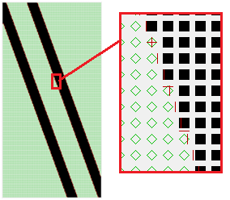
Figure: tilted_plates.pa0 shown in Modify. A zoom near the electrode surface is shown on right.
The two potential arrays, tilted_plates.pa0 and tilted_plates_trad.pa0, differ only in that the first contains surface enhancement information, as shown above. The batch program evaluates potentials along the line Y=20 gu. The difference between the calculated potentials and theoretical field are shown as deltas in the Log window:
x, Delta V (enhanced), Delta V (traditional), V (enhanced) -11, -9.9E-002, -1.0E-001, 0.001267 -10, -4.9E-002, -8.4E-005, 0.050654 -9, -3.0E-005, -7.7E-005, 0.099970 -8, -3.1E-005, -5.7E-005, 0.099969 -7, -2.8E-005, -2.7E-005, 0.099972 -6, -2.4E-005, 8.3E-006, 0.099976 -5, -1.9E-005, 4.5E-005, 0.099981 -4, -1.5E-005, 8.0E-005, 0.099985 -3, -1.1E-005, 1.1E-004, 0.099989 -2, -8.2E-006, 1.3E-004, 0.099992 -1, -6.5E-006, 1.5E-004, 0.099994 0, -5.9E-006, 1.5E-004, 0.099994 1, -6.5E-006, 1.5E-004, 0.099994 2, -8.1E-006, 1.3E-004, 0.099992 3, -1.1E-005, 1.1E-004, 0.099989 4, -1.5E-005, 8.1E-005, 0.099985 5, -1.9E-005, 4.6E-005, 0.099981 6, -2.3E-005, 8.7E-006, 0.099977 7, -2.8E-005, -2.7E-005, 0.099972 8, -3.1E-005, -5.6E-005, 0.099969 9, -3.0E-005, -7.6E-005, 0.099970 10, -4.9E-002, -1.0E-001, 0.050654 11, -9.9E-002, -1.0E-001, 0.001267Figure: errors in potentials (volts) for enhanced and traditional PA's.
The PA with surface enhancements has errors one or two orders of magnitude lower than the PA without it.
Files in this Example
- README.html - description of this example
- quad.gem - RF quadrupole with surface enhancement, 2D planar symmetry
- quad.con - contour definitions
- quad.fly2 - particle definitions
- quad.gem - geometry definition, creates quad.pa#
- quad_trad.gem - same as quad.gem but without surface enhancement (for comparison)
- quad.lua - workbench user program, applies RF to electrodes
- sc.iob - spherical capacitor (used as an HDA) with surface enhancement, 2D cylindrical symmetry.
- sc.con - contour definitions
- sc.fly2 - particle definitions
- sc.gem - geometry definition, creates sc.pa
- sc.lua - workbench user program, used only to assist analysis
- sc.rec - data recording definitions
- sc_trad.gem - same as sc.gem but without surface enhancement (for comparison)
- sc_build.lua - alternative to sc.gem - builds surface enhanced PA via Lua API.
- sc3d.iob - 3D version of sc.iob
- tilted_plates.iob - parallel electrodes plates, tilted at small angle with respect to PA grid, with
surface enhancement, 2D planar symmetry
- tilted_plates.con - contour definitions
- tilted_plates.fly2 - particle definitions
- tilted_plates.gem - geometry definition, creates tilted_plates.pa
- tilted_plates_trad.gem - same as tiled_plates.gem but without surface enhancement (for comparison)
- tilted_plates3d.gem - 3D version of tilted_plates.gem (unused in IOB)
- tilted_plates_batch.lua - similar to tilted_plates.iob but operates in batch mode.
Using these Examples
Most of these examples (apart from tilted_plates_batch.lua) can be run in the usual way
by clicking View/Load Workbench, selecting the .iob file (and refining if prompted to),
and clicking Fly'm.
See comments above for additional notes.
Notice the use of surface=fractional in many of the GEM files, which enables
surface enhancement information in the PA objects.
Nothing special is required to load these GEM files or refine their PA's.
To permit comparison, some of these examples create a PA with surface
enhancement as well as a PA without surface enhancement and place both of them
overlapped on the same workbench.
When this is so, the PA instance with the higher priority number on the PAs tab is actually
seen by the particles.
The PA instances can be reordered with the L+/L- buttons and particles reflown
to compare trajectories with the two PA types.
You may also find it useful to disable the "Draw" checkbox for one of the two PA instances
on the PA instance tab, or just remove one of the PA instances entirely (Del button).
See Also
- Doc(Surface Enhancement) - description of the surface enhancement feature
- Example(field_emission) - nested coarse/fine PA's (another way to improve accuracy)
- Example(kingdon_trap) - quadro_logarithmic_build.lua - uses surface enhancement with analytically defined electrode shape (with pa:fill)
Source/History
- 2012-07-12: add code in sc.lua to optionally apply theoretical fields for comparison. More README additions.
- 2012-06-26: added sc_build.lua.
- 2012-05 - major update to examples for SIMION 8.1.1.10.
- 2011-08 - 8.1.0 release using gemrefine in examples\experimental
- D.Manura, 2011.